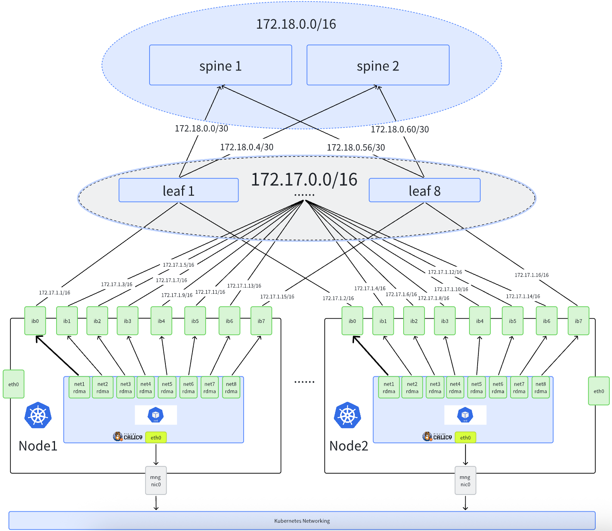

AI 集群 RDMA 网络（总览）
简体中文 | English
介绍
本节介绍在建设 AI 集群场景下，Spiderpool 如何给容器提供 RDMA 通信能力，它适用在 RoCE 和 Infiniband 网络场景下。
为什么 AI 集群需要 RDMA 网络？
在大规模 AI 训练场景中，GPU 之间需要频繁交换大量数据（如梯度同步、模型参数更新等）。传统的 TCP/IP 网络存在以下问题：
- 高延迟：数据需要经过内核协议栈处理，增加了传输延迟
- 高 CPU 开销：数据拷贝和协议处理消耗大量 CPU 资源
- 带宽瓶颈：难以充分利用高速网络硬件的带宽能力
RDMA（Remote Direct Memory Access）技术通过以下特性解决了这些问题：
- 零拷贝：数据直接在应用内存和网卡之间传输，无需内核参与
- 内核旁路：绕过操作系统内核，大幅降低延迟
- 硬件卸载：协议处理由网卡硬件完成，释放 CPU 资源
- 高带宽低延迟：可实现微秒级延迟和数百 Gbps 的带宽
两种 RDMA 协议
在 AI 集群中，RDMA 常见有两种网络协议：RoCE 和 Infiniband。
| 比较维度 | RoCE | Infiniband |
|---|---|---|
| 承载网络 | 基于以太网（Ethernet） | 基于 Infiniband 结构网络 |
| 网络标识 | 通常依赖 IP 规划（与以太网子网、路由策略强相关） | 可以只依赖 LID 通信；也可选配 IP 统一管理 |
| 典型前置依赖 | 以太网侧常配合 DCB / PFC / ECN 等能力以保证低丢包 | 依赖 Subnet Manager（例如 OpenSM）进行子网管理 |
| 适用场景倾向 | 更容易与现有以太网数据中心融合，运维门槛相对较低 | 更偏 HPC/AI 专用高性能网络，端到端一致性要求更强 |
| 支持的生态 | 以太网与云原生生态成熟，主流网卡/交换机厂商与 Linux/Kubernetes 网络栈普遍支持 | 在 Kubernetes/容器网络场景下生态相对集中，目前主要由 NVIDIA（Mellanox）体系提供端到端支持 |
| Spiderpool 方案匹配 | 支持 Macvlan（共享）和 SR-IOV（隔离）两种方案 | 仅支持 SR-IOV（隔离）方案 |
两种 RDMA 方案
Spiderpool 支持两种 RDMA 方案：共享 RDMA 和 隔离 RDMA。
共享 RDMA 方案（Macvlan）
基于 RDMA shared device plugin，给容器插入 Macvlan 接口，能够把 master 接口的 RDMA 设备共享给容器使用。
- RDMA 子系统模式：共享模式（shared）
- CNI：Macvlan CNI
- 适用网络：仅 RoCE
隔离 RDMA 方案（SR-IOV）
基于 sriov-network-operator，为容器提供基于 SR-IOV 接口的独立 RDMA 设备。
- RDMA 子系统模式：独占模式（exclusive）
- CNI：
- RoCE 网络：SR-IOV CNI
- Infiniband 网络：IB-SRIOV CNI
- 适用网络：RoCE 和 Infiniband
隔离与共享 RDMA 方案对比
| 比较维度 | Macvlan 共享 RDMA 方案 | SR-IOV CNI 隔离 RDMA 方案 |
|---|---|---|
| 网络隔离 | 所有容器共享 RDMA 设备，隔离性较差 | 容器独享 RDMA 设备，隔离性较好 |
| 性能 | 性能较高 | 硬件直通，性能最优 |
| 资源利用率 | 资源利用率较高 | 较低，受硬件支持的 VFs 数量限制 |
| 配置复杂度 | 配置相对简单 | 配置较为复杂，需要硬件支持和配置 |
| 兼容性 | 兼容性较好，适用于大多数环境 | 依赖硬件支持，兼容性较差 |
| 适用场景 | 适用于大多数场景，包括裸金属，虚拟机等 | 只适用于裸金属，不适用于虚机场景 |
| 成本 | 成本较低，因为不需要额外的硬件支持 | 成本较高，需要支持 SR-IOV 的硬件设备 |
| 支持 RDMA 协议 | 支持 RoCE 协议，不支持 Infiniband 协议 | 支持 RoCE 和 Infiniband 协议 |
RDMA 组网模式
下面介绍几种 RDMA 网络的组网方案:
共享子网组网方案（RoCE）

集群的网络规划如下：
-
在节点的 eth0 网卡上运行 calico CNI，来承载 kubernetes 流量。AI workload 将会被分配一个 calico 的缺省网卡，进行控制面通信。
-
节点上使用具备 RDMA 功能的 Mellanox ConnectX5 网卡来承载 AI 计算的 RDMA 流量，网卡接入到 rail optimized 网络中。AI workload 将会被额外分配所有 RDMA 网卡的虚拟化接口（Macvlan 或 SR-IOV），确保 GPU 的高速网络通信。
-
所有节点的相同轨道网卡使用相同子网。例如，所有节点的 rail1 网卡都使用 172.17.1.0/24 子网。
该组网方式适合 Macvlan 和 SR-IOV CNI 方案。
独享子网组网方案（RoCE）
在一些大规模 AI 集群中，由于 IP 地址资源的限制，并不能为每个轨道提供独立的大子网。只能将有限的子网拆分为更小的子网，给不同节点的不同轨道网卡使用。此方案下，IP 地址得到更充分的利用，每个节点的每个轨道都能获得独立的子网。 LEAF 交换机会配置路由聚合，确保 RDMA 流量得到高效转发。
假设环境为:
- 一个 16 位掩码的 IP 网段: 172.17.0.0/16
- 共计 8 个节点，每个节点 8 张 RDMA 网卡
根据实际规划大概每个节点每个轨道网卡可承载 30 个 Pod 的规划。我们只需要从 172.17.0.0/16 取出部分 IP 地址： 172.17.0.0 - 172.17.7.255 作为 RDMA 子网规划。然后拆分 8 个小子网，供 8 个轨道使用。比如 1 号轨道的网卡从 172.17.0.0/24 中分配。然后再将 172.17.0.0/24 分为 8 个节点使用，这样每个节点的每个轨道都得到独立的子网使用。比如:
- 节点 node1 的 1 号轨道网卡使用 172.17.0.0/27 子网。
- ...
- 节点 node8 的 1 号轨道网卡使用 172.17.0.224/27 子网。
注意：第一个 RDMA 网卡用于承接 RDMA 控制面通信，其他网卡用于承载 AI 计算的 RDMA 流量。

Infiniband 组网方案

Infiniband 组网方案特点：
- 每个节点有 8 张 Infiniband 网卡（ib0-ib7），至少一张其他网卡用于承载集群管理或存储流量（eth0）。
- Infiniband 网络中不强制要求 IB 网卡配置 IP 地址，每个网卡拥有独一无二的 LID（通过 Subnet Manager 管理），可直接通过 LID 通信。
- 在常见的 IB 网络规划中，仍会为每个 IB 网卡配置 IP 地址，方便统一管理。例如：所有节点的 IB 网卡 IP 地址都从 172.17.0.0/16 子网分配。
环境要求
- 参考 Spiderpool安装要求
- 主机上准备好 Helm 二进制
- 安装好 Kubernetes 集群，kubelet 工作在主机 eth0 网卡上
- 主机具备 RDMA 能力的网卡，如 Mellanox ConnectX5 网卡
- Infiniband 网络场景下，确保 OpenSM 子网管理器工作正常
- 安装 Calico 作为集群的缺省 CNI
如果未安装，可参考 官方文档 或参考以下命令安装：
$ kubectl apply -f https://github.com/projectcalico/calico/blob/master/manifests/calico.yaml
$ kubectl wait --for=condition=ready -l k8s-app=calico-node pod -n kube-system
# set calico to work on host eth0
$ kubectl set env daemonset -n kube-system calico-node IP_AUTODETECTION_METHOD=kubernetes-internal-ip
# set calico to work on host eth0
$ kubectl set env daemonset -n kube-system calico-node IP6_AUTODETECTION_METHOD=kubernetes-internal-ip
主机准备
1. 安装 RDMA 网卡驱动，然后重启主机（这样才能看到网卡）
传统基于 MLNX_OFED 的驱动安装方式自 2024 年 10 月起已经停止维护，未来将被移除。所有新功能都会迁移到 NVIDIA-DOCA 中, 推荐使用 NVIDIA DOCA-OFED 方式安装:
前往 NVIDIA-DOCA 下载页面 获取主机系统对应的 DOCA 版本, 如对于 Ubuntu 22.04 系统:
sudo wget https://www.mellanox.com/downloads/DOCA/DOCA_v3.1.0/host/doca-host_3.1.0-091000-25.07-ubuntu2204_amd64.deb
sudo dpkg -i doca-host_3.1.0-091000-25.07-ubuntu2204_amd64.deb
sudo apt-get update
sudo apt-get -y install doca-ofed
对于 Mellanox 网卡，也可基于容器化安装驱动，实现对集群主机上所有 Mellanox 网卡批量安装驱动，运行如下命令，注意的是，该运行过程中需要访问因特网获取一些安装包。当所有的 ofed pod 进入 ready 状态，表示主机上已经完成了 OFED driver 安装。
$ helm repo add spiderchart https://spidernet-io.github.io/charts
$ helm repo update
$ helm search repo ofed
# pelase replace the following values with your actual environment
# for china user, it could set `--set image.registry=nvcr.m.daocloud.io` to use a domestic registry
$ helm install ofed-driver spiderchart/ofed-driver -n kube-system \
--set image.OSName="ubuntu" \
--set image.OSVer="22.04" \
--set image.Arch="amd64"
若希望 RDMA 系统工作在独占模式下，必须至少满足以下条件之一： (1） 基于 5.3.0 或更新版本的 Linux 内核，系统中加载的 RDMA 模块，rdma 核心包提供了在系统启动时自动加载相关模块的方法 (2） 需要 Mellanox OFED 4.7 版或更新版本。在这种情况下，不需要使用基于 5.3.0 或更新版本的内核。
2. 设置 RDMA 子系统模式
RDMA 子系统支持两种模式，需要根据选择的方案进行配置：
共享 RDMA 方案（Macvlan）：保持 shared 模式
共享方案使用默认的 shared 模式，无需修改。
隔离 RDMA 方案（SR-IOV）：设置为 exclusive 模式
SR-IOV 场景需要设置主机上的 RDMA 子系统为 exclusive 模式，使得容器能够独立使用 RDMA 设备，避免与其他容器共享。
# 查询当前模式：
$ rdma system
netns shared copy-on-fork on
# 持久化配置，重启后生效
$ echo "options ib_core netns_mode=0" >> /etc/modprobe.d/ib_core.conf
# 切换到 exclusive 模式（如果设置失败，请重启主机）
$ rdma system set netns exclusive
# 验证切换成功
$ rdma system
netns exclusive copy-on-fork on
如果 rdma system 设置重启后没有生效，则 ib_core 是在系统启动早期就会被加载的模块，那么修改 .conf 后需要 update-initramfs -u 重新生成 initramfs，然后再执行 reboot。
3. 设置网卡的 RDMA 工作模式（ Infiniband or ethernet ）
确认网卡支持的工作模式：本示例环境中，宿主机上接入了 mellanox ConnectX 5 VPI 网卡，查询 RDMA 设备，确认网卡驱动安装完成
$ rdma link
link mlx5_0/1 state ACTIVE physical_state LINK_UP netdev ens6f0np0
link mlx5_1/1 state ACTIVE physical_state LINK_UP netdev ens6f1np1
.......
确认网卡的工作模式，如下输出表示网卡工作在 Ethernet 模式下，可实现 RoCE 通信
如下输出表示网卡工作在 Infiniband 模式下，可实现 Infiniband 通信
如果网卡没有工作在预期的模式下，请输入如下命令，确认网卡支持配置 LINK_TYPE 参数，如果没有该参数，请更换支持的网卡型号
$ mst start
# check the card's PCIE
$ lspci -nn | grep Mellanox
86:00.0 Infiniband controller [0207]: Mellanox Technologies MT27800 Family [ConnectX-5] [15b3:1017]
86:00.1 Infiniband controller [0207]: Mellanox Technologies MT27800 Family [ConnectX-5] [15b3:1017]
.......
# check whether the network card supports parameters LINK_TYPE
$ mlxconfig -d 86:00.0 q | grep LINK_TYPE
LINK_TYPE_P1 IB(1)
3.2 批量设置网卡的工作模式：获取 批量设置脚本，按照如下设置后，请重启主机
$ chmod +x ./setNicRdmaMode.sh
# 批量查询所有 rdma 网卡工作在 ib 或者 eth 模式下
$ ./setNicRdmaMode.sh q
# 1. 如果配置所有网卡为 infiniband 或 roce 模式
# 把所有 rdma 网卡切换到 eth 模式下
$ RDMA_MODE="roce" ./setNicRdmaMode.sh
# 把所有 rdma 网卡切换到 ib 模式下
$ RDMA_MODE="infiniband" ./setNicRdmaMode.sh
# 2. 如果需要为 GPU 和非 GPU 网卡分别配置不同模式
# 基于 nvidia-smi 自动查询并配置 GPU 网卡的模式
$ GPU_RDMA_MODE="infiniband" ./setNicRdmaMode.sh
# 基于 nvidia-smi 自动查询并配置 GPU 和非 GPU 亲和的网卡
$ GPU_RDMA_MODE="infiniband" OTHER_RDMA_MODE="roce" ./setNicRdmaMode.sh
如果批量切换后网卡模式不生效，需要重启主机。
4. 为所有的 RDMA 网卡，设置 ip 地址、MTU 和 策略路由等
- Roce 组网方案下，RDMA 流量需要通过以太网进行传输，linux 主机默认只有一个缺省路由，在多网卡场景下，需要为不同网卡设置策略默认路由，以确保 hostnetwork 模式下的任务能正常运行 All-to-All 等通信，但不同组网方案配置细节有所差异。
- Infiniband 组网方案下，RDMA 流量不需要通过以太网传输，因此不需要额外配置策略路由。
- 无论 RoCE 还是 Infiniband，通常交换机和主机网卡都会工作在较大的 MTU 参数下，以提高性能。
首先获取 ubuntu 网卡配置脚本:
根据组网方案，参考以下命令执行配置
4.1 RoCE 组网场景
- 对于共享子网方案
$ chmod +x ./setNicAddr.sh
# 对于共享子网组网方案，设置网卡
$ INTERFACE="eno3np2" IPV4_IP="172.16.0.10/24" IPV4_GATEWAY="172.16.0.1" \
MTU="4200" ENABLE_POLICY_ROUTE="true" ./setNicAddr.sh
# 以 eno3np2 为例，查看网卡 ip 和 mtu 是否预期设置
$ ip a s eno3np2
4: eno3np2: <BROADCAST,MULTICAST,UP,LOWER_UP> mtu 4200 qdisc mq state UP group default qlen 1000
link/ether 38:68:dd:59:44:4a brd ff:ff:ff:ff:ff:ff
altname enp8s0f2np2
inet 172.16.0.10/24 brd 172.16.0.255 scope global eno3np2
valid_lft forever preferred_lft forever
inet6 fe80::3a68:ddff:fe59:444a/64 scope link proto kernel_ll
valid_lft forever preferred_lft forever
# 检查当前网卡是否正确设置策略路由: 确保从该网卡发出的流量需要从各自的策略路由表项转发：
$ ip rule
0: from all lookup local
32763: from 172.16.0.10 lookup 152 proto static
32766: from all lookup main
32767: from all lookup default
$ ip rou show table 152
default via 172.16.0.1 dev eno3np2 proto static
- 对于独享子网方案
必须选择一张网卡（一般为节点的 1 号轨道的 RDMA 网卡）作为 RDMA 子网路由的网卡，需要设置：ENABLE_RDMA_DEFAULT_ROUTE="true" RDMA_SUBNET="172.16.0.0/16"，对于其它网卡不需要配置 RDMA 子网路由。
- ENABLE_RDMA_DEFAULT_ROUTE="true": 表示该网卡将作为 RDMA 子网路由的网卡
- RDMA_SUBNET="172.16.0.0/16": 表示 RDMA 网络的子网
对于 1 号轨道的网卡，设置如下：
$ INTERFACE="eno3np2" ENABLE_RDMA_DEFAULT_ROUTE="true" RDMA_SUBNET="172.16.0.0/16" IPV4_IP="172.16.0.10/24" IPV4_GATEWAY="172.16.0.1" ./setNicAddr.sh
对于非 1 号轨道的网卡，只需要配置 IP 地址，设置如下：
$ INTERFACE="eno3np2" IPV4_IP="172.16.0.10/24" ENABLE_POLICY_ROUTE="true" IPV4_GATEWAY="172.16.0.1" ./setNicAddr.sh
检查 IP 地址及 MTU 配置:
# 以 eno3np2 为例，查看网卡 ip 和 mtu 是否预期设置
$ ip a s eno3np2
4: eno3np2: <BROADCAST,MULTICAST,UP,LOWER_UP> mtu 4200 qdisc mq state UP group default qlen 1000
link/ether 38:68:dd:59:44:4a brd ff:ff:ff:ff:ff:ff
altname enp8s0f2np2
inet 172.16.0.10/24 brd 172.16.0.255 scope global eno3np2
valid_lft forever preferred_lft forever
inet6 fe80::3a68:ddff:fe59:444a/64 scope link proto kernel_ll
valid_lft forever preferred_lft forever
检查当前网卡是否正确设置策略路由: 确保从该网卡发出的流量需要从各自的策略路由表项转发 ：
$ ip rule
0: from all lookup local
32763: from 172.16.0.10 lookup 152 proto static
32766: from all lookup main
32767: from all lookup default
$ ip rou show table 152
default via 172.16.0.1 dev eno3np2 proto static
如果是第一张网卡，检查 RDMA 子网路由是否配置成功，并从当前网卡转发：
对于两种方案： 多 RDMA 网卡时可能访问集群流量的数据包（比如 Calico）的源 IP 被 Linux 随机选择到了 RDMA 网卡的 IP 地址上，导致访问失败。 所以我们需要保证非 RDMA 流量不需要从 RDMA 网卡转发：
获取配置脚本, 执行以下命令:
RDMA_CIDR 表示 RDMA 网络的子网
执行完成后检查 ip rule 是否预期设置:
$ ip rule
0: from all lookup local
32762: not to 172.16.0.0/16 lookup main proto static
32763: from 172.16.0.10 lookup 152 proto static
32766: from all lookup main
32767: from all lookup default
4.2 Infiniband 组网场景
该模式下，不需要设置策略路由，只需要配置 IP 地址即可。但注意配置 IP 前，需要确保内核模块: ib_ipoib 已加载。
如果未加载，需要执行加载:
确认加载完成后，使用 setNicAddr.sh 脚本为所有 IB 网卡配置 IP 及 MTU。下面以 ib0 网卡为例：
配置完成后，可以验证网卡是否配置成功：
$ ip a s ib0
4: ib0: <BROADCAST,MULTICAST,UP,LOWER_UP> mtu 4200 qdisc mq state UP group default qlen 1000
link/ether 38:68:dd:59:44:4a brd ff:ff:ff:ff:ff:ff
altname enp8s0f2np2
inet 172.16.0.10/24 brd 172.16.0.255 scope global ib0
valid_lft forever preferred_lft forever
inet6 fe80::3a68:ddff:fe59:444a/64 scope link proto kernel_ll
valid_lft forever preferred_lft forever
5.（仅 RoCE）配置无损网络
在高性能网络场景下，RDMA 网络对于丢包非常敏感，一旦发生丢包重传，性能会急剧下降。因此要使得 RDMA 网络性能不受影响，丢包率必须保证在 1e-05（十万分之一）以下，最好为零丢包。对于 Roce 网络，可通过 PFC + ECN 机制来保障网络传输过程不丢包。
可参考 配置 RDMA 无损网络
配置无损网络要求必须在 RDMA Roce 网络环境下，不能是 Infiniband 配置无损网络必须要求交换机支持 PFC + ECN 机制，并且配置与主机侧对齐，否则不能工作
6.（可选）开启 GPUDirect RDMA
在安装或使用 gpu-operator 过程中:
- 开启 helm 安装选项:
--set driver.rdma.enabled=true --set driver.rdma.useHostMofed=true，gpu-operator 会安装 nvidia-peermem 内核模块，启用 GPUDirect RMDA 功能，加速 GPU 和 RDMA 网卡之间的转发性能。可在主机上输入如下命令，确认安装成功的内核模块
- 开启 helm 安装选项:
--set gdrcopy.enabled=true，gpu-operator 会安装 gdrcopy 内核模块，加速 GPU 显存 和 CPU 内存 之间的转发性能。可在主机上输入如下命令，确认安装成功的内核模块
- 禁用 PCI 访问控制服务 (ACS) 以支持 GPUDirect RDMA
如果输出显示 "SrcValid+", 表示 ACS 可能被启用。为了使 GPUDirect RDMA 正常工作，需要禁用 PCI 访问控制服务 (ACS)。可通过 BIOS 禁用 IO 虚拟化或 VT-d 来实现。对于 Broadcom PLX 设备，也可以通过操作系统禁用，但需要在每次重启后重新执行。以下是一件关闭 ACS 脚本，但系统重启会失效:
for BDF in `lspci -d "*:*:*" | awk '{print $1}'`; do
# skip if it doesn't support ACS
sudo setpci -v -s ${BDF} ECAP_ACS+0x6.w > /dev/null 2>&1
if [ $? -ne 0 ]; then
continue
fi
sudo setpci -v -s ${BDF} ECAP_ACS+0x6.w=0000
done
更多信息请参考 NVIDIA NCCL 故障排除指南
安装 Spiderpool
根据选择的 RDMA 方案，安装 Spiderpool 时需要启用不同的组件。
共享 RDMA 方案（Macvlan）
helm repo add spiderpool https://spidernet-io.github.io/spiderpool
helm repo update spiderpool
helm install spiderpool spiderpool/spiderpool --create-namespace -n spiderpool \
--set rdma.rdmaSharedDevicePlugin.install=true
隔离 RDMA 方案（SR-IOV）
helm repo add spiderpool https://spidernet-io.github.io/spiderpool
helm repo update spiderpool
helm install spiderpool spiderpool/spiderpool --create-namespace -n spiderpool \
--set sriov.install=true
- 如果您是中国用户，可以指定参数
--set global.imageRegistryOverride=ghcr.m.daocloud.io来使用国内的镜像源。- 设置
--set spiderpoolAgent.prometheus.enabled --set spiderpoolAgent.prometheus.enabledRdmaMetric=true和--set grafanaDashboard.install=true命令行参数可以开启 RDMA metrics exporter 和 Grafana dashboard，更多可以查看 RDMA metrics。
下一步
Spiderpool 安装完成之后，接下来需要配置 CNI 和创建 Spiderpool 资源。根据选择的方案，请参考对应的详细配置文档：